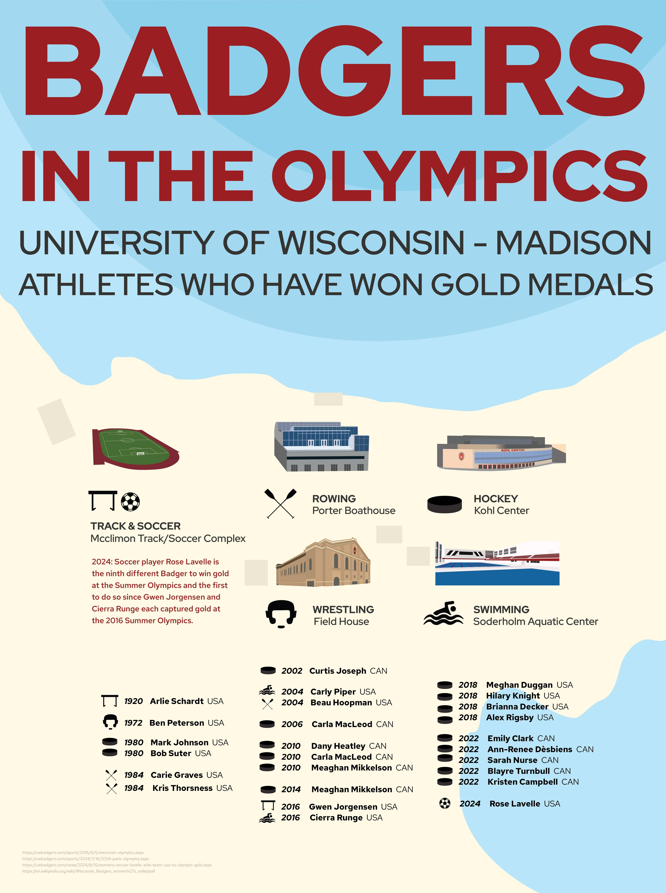
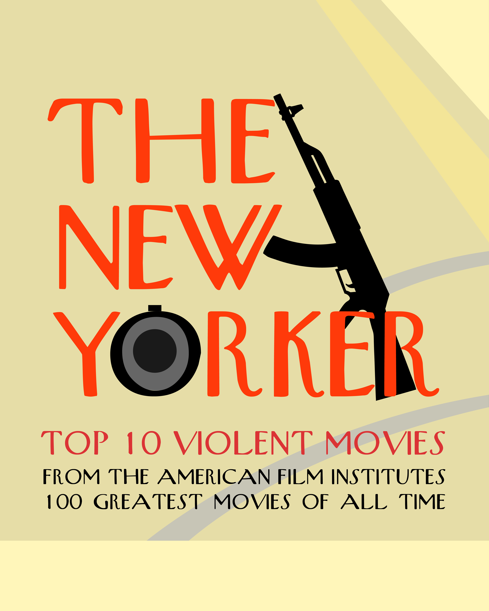
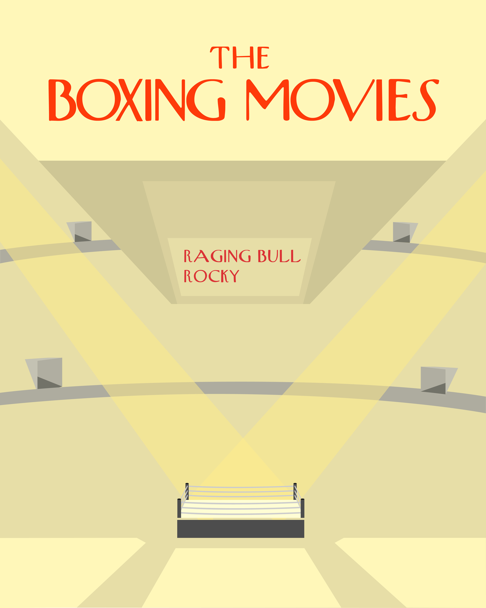
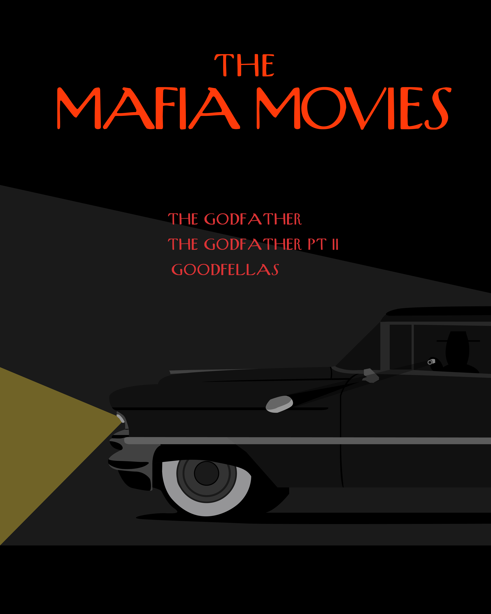
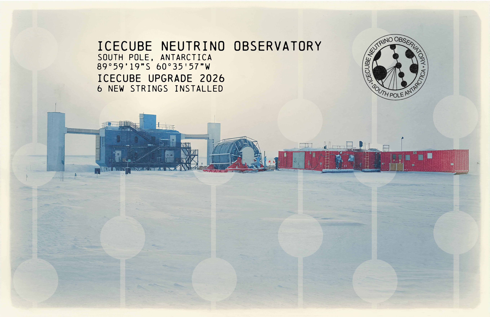
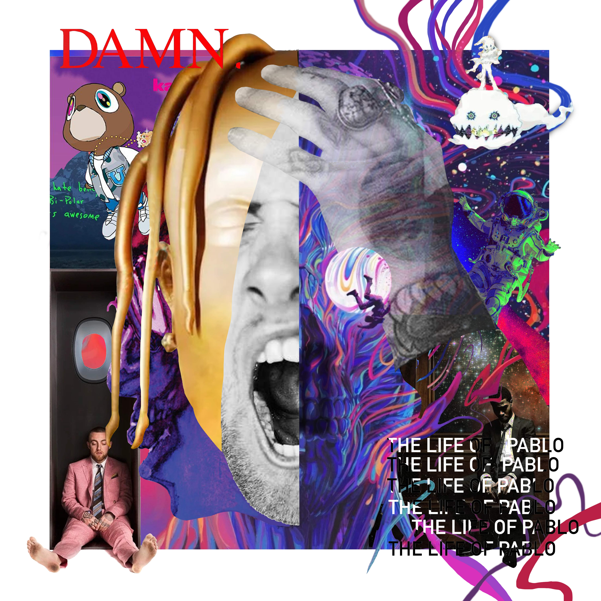
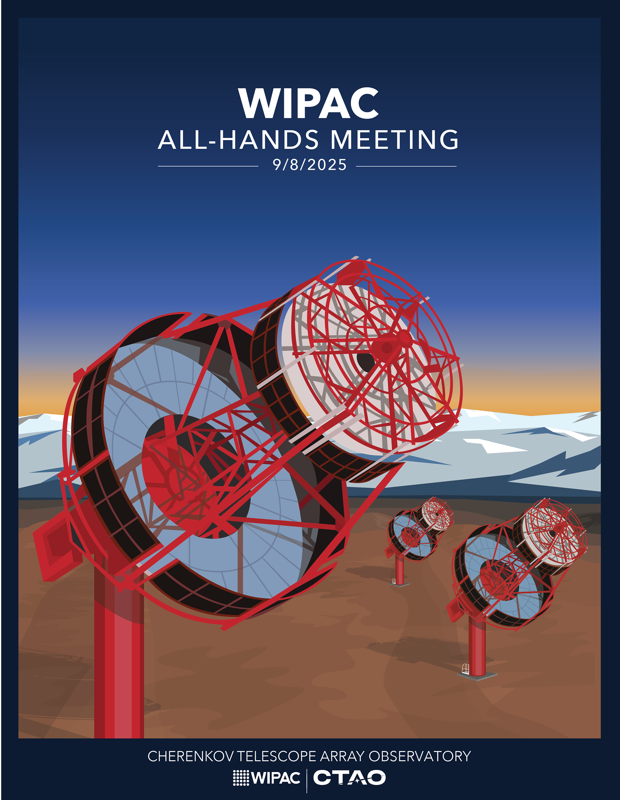
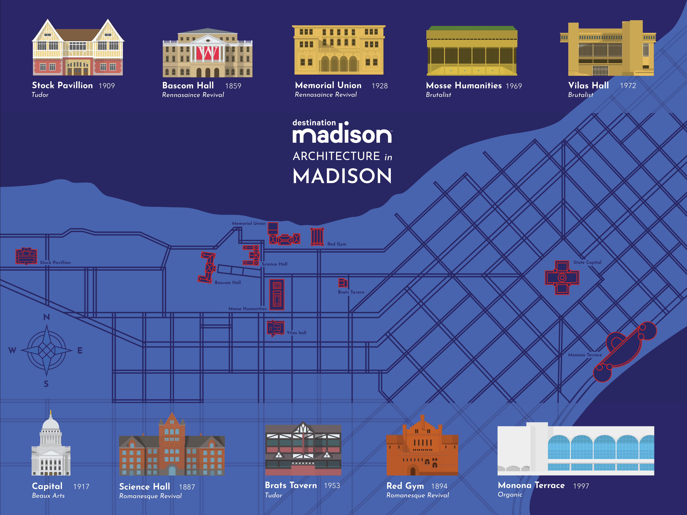
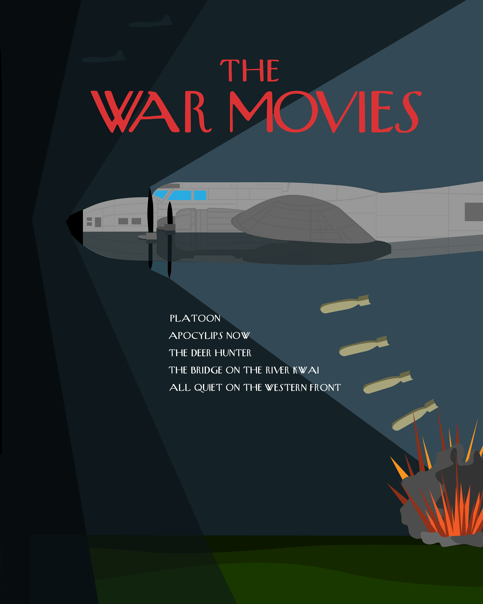

Posters and Print
Posters, currency, album art, and more










Architecture in Madison


For this project, we had to design a map calling out destinations around Madison. I decided to map out my favorite architecture across the city. We had to use Destination Madison's logo, colors, and typography while picking a unique theme. The map itself resembles a blueprint design, and each building's layout is then highlighted. I used a variety of different architectural styles, such as brutalist, organic, and different Italian revivals.
The New Yorker Slideshow
For this project, we had to design a 10 page slideshow representing 10 different movies. I chose to focus on intense violent movies and split the project into 3 sections: boxing, mafia, and war. To ensure each section was unique, I developed separate designs for each, then blended and combined them to create a cohesive overall look through the slideshow. The design guidelines required me to approach the project as if I were working for The New Yorker. To accomplish this, I used their signature fonts, color palette, and illustrative cover style.



Badgers in the Olympics Poster
The goal of this project was to visually represent data regarding Olympic medalists who attended the University of Wisconsin-Madison. To organize the information meaningfully, I chose to categorize the medalists based on the campus locations where their respective sports are played. I mapped each of the campus buildings and a chronological timeline connecting back to each sport.
Italian Lira Redesign
This project challenged us to redesign three Italian Lira bills. We had to keep the iconography and copy, but had to redesign them in a modern way. Drawing inspiration from traditional Italian tile patterns, I designed a cohesive series featuring both the front and back designs for each of the three bills.


Retro Italian Album Cover Redesign
I didn't know where to start with this project, as I usually make illustrations, but I decided to work with photography. I thought an illustration wouldn't be able to represent this original cover. I found a photo I had taken, messed with it in Photoshop, and designed the text. Then I wanted to make the image go from the cover to the back, which looked really cool on the final printed sleeve.


RiverBank
RiverBank is one of my favorite projects I've completed, blending my love for graphic design with the outdoors and national parks. Inspired by the brand Nature Backs, I set out to create a clothing line featuring illustrations that celebrate nature and outdoor exploration.


College Town Tees
This project began as a collaboration with a friend to create a line of collegiate clothing. Each school would feature its college town embroidered on the front, with graphics on the back illustrating a signature landmark of the campus.